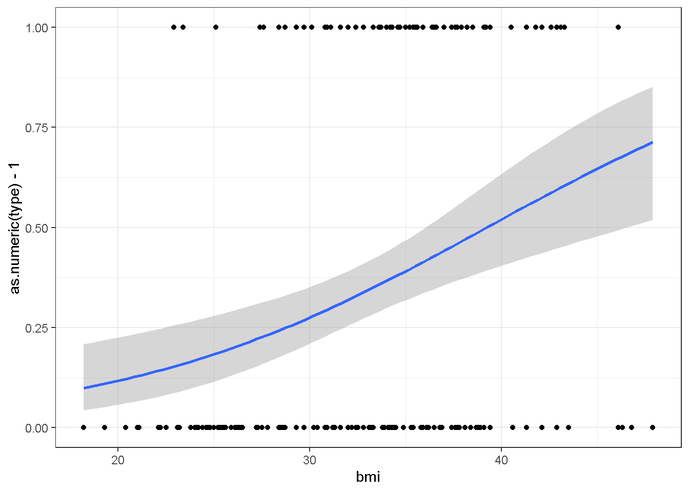

Chapter 4 REGRESIÓN LOGÍSTICA SIMPLE
#y=as.numeric(type)-1 is needed for the plot
ggplot(Pima.tr, aes(x=bmi, y=as.numeric(type)-1)) + geom_point() +
geom_smooth(method="glm",
method.args=list(family="binomial"(link=logit)), se=TRUE) +
theme_bw()## `geom_smooth()` using formula 'y ~ x'
diabetes.model <- glm(type~bmi,data=Pima.tr,family="binomial"(link=logit))
summary(diabetes.model)##
## Call:
## glm(formula = type ~ bmi, family = binomial(link = logit), data = Pima.tr)
##
## Deviance Residuals:
## Min 1Q Median 3Q Max
## -1.5797 -0.9235 -0.6541 1.2506 1.9377
##
## Coefficients:
## Estimate Std. Error z value Pr(>|z|)
## (Intercept) -4.11156 0.92806 -4.430 9.41e-06 ***
## bmi 0.10482 0.02738 3.829 0.000129 ***
## ---
## Signif. codes: 0 '***' 0.001 '**' 0.01 '*' 0.05 '.' 0.1 ' ' 1
##
## (Dispersion parameter for binomial family taken to be 1)
##
## Null deviance: 256.41 on 199 degrees of freedom
## Residual deviance: 239.97 on 198 degrees of freedom
## AIC: 243.97
##
## Number of Fisher Scoring iterations: 4Si solo observa el valor \(p\), el resultado no sorprendente es que hay un relación entre el índice de masa corporal y la diabetes.
Profundizando en la salida con más detalle, nuestra ecuación de regresión logística es:
\[ ln(\frac{\hat{p}}{1-\hat{p}})=-4.11156+0.10482X \]
Suponga que queremos hacer una predicción para una mujer en esta población con un índice de masa corporal de \(X= 30\). Sustituya la ecuación para obtener su logit
\[ ln(\frac{\hat{p}}{1-\hat{p}})=-4.11156+0.10482(30)=-0.96696 \]
Observe que su logit (log odds-ratio) es negativo. Esto será cierto siempre que la probabilidad predicha \(\hat{p}<0.5\), por lo que en este escenario usted querría un logit negativo. Cuando \(\hat{p}>0.5\), el logit será positivo, y si \(\hat{p}= 0.5\) entonces el logit es::
\[
ln(\frac{0.5}{1-0.5})=ln(1)=0
\]
Probablemente preferiria una probabilidad o un porcentaje en lugar de un logit.Tome la funcion logit inversa para obtener esto.
\[\hat{p}=\frac{exp(-0.96696)}{1+exp(-0.96696)}=0.275 \]
Estamos pronosticando un \(27.5\%\) de probabilidad de diabetes tipo II cuando el índice de masa corporal es igual a \(X=30\).
Prestando atención al parámetro de “pendiente” \(\beta_1\), su estimación es \(0.10482\). Eso es positivo, lo que significa que bmi está asociado positivamente con el evento, que tiene diabetes tipo II. Por cada aumento de 1 unidad en X (es decir, alguien gana peso suficiente para que el bmi suba en 1), el aumento previsto en el logit es 0.10482.
Si esto no significa mucho para usted, entonces podemos exponencializar la pendiente para convertir el registro de la proporción de log probabilidades en solo la proporción de probabilidades.
\[exp(\hat{\beta_1})=e^{\hat{\beta_1}}=e^{0.10428}=1.11 \] Entonces, la razón de posibilidades es \(1.11\). Esto significa que por cada aumento de 1 en el bmi, la probabilidad de tener diabetes tipo II aumenta en un \(11\%\). Si la razón de posibilidades era exactamente 1, eso indicaría una probabilidad igual (es decir, la variable no estaría asociada con la evento), y las razones de probabilidad por debajo de 1 indican que la probabilidad disminuye a medida que la variable aumenta. Si hubo un ejercicio de variable en el conjunto de datos que fue asociado con tener diabetes, esperaríamos que su \(\beta\) fuera negativo, por lo que el La razón de posibilidades estaría entre 0 y 1.
Si quisiéramos observar el impacto de un aumento de 10 puntos en el bmi (\(\Delta x=10\))
\(exp(\Delta x \hat{\beta_1} ) = exp(10\times 0.10428) = e^{1.0428} = 2.85\)
Las probabilidades(odss) de tener diabetes casi se triplicarían si el IMC aumenta en 10 unidades.